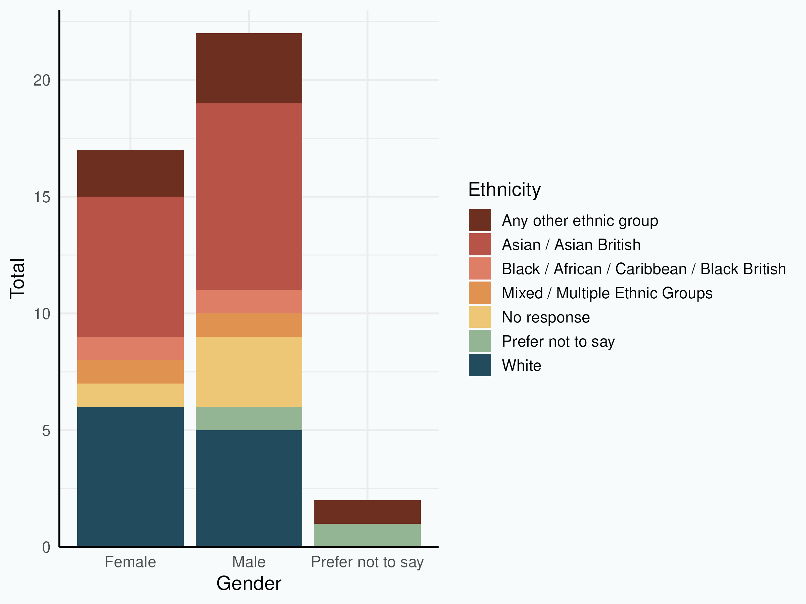
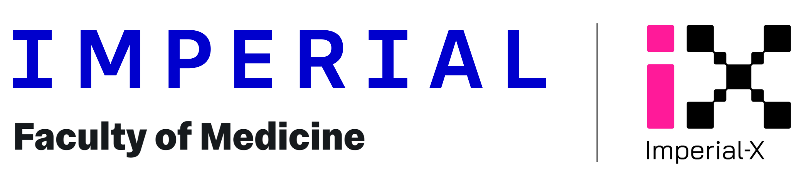

Collaborative Workshop on AI in Medicine
Imperial I-X, White City Campus
March 18, 2025
Welcome
- Who is here: 42 diverse researchers, clinicians, and innovators from across Imperial College, all bringing unique expertise in health and AI.
- Why we’re here: To foster interdisciplinary collaborations and inspire innovative AI applications in medicine (with an eye on future funding).
- Workshop goals: Build connections, share knowledge, and set the stage for ongoing partnerships in AI-driven healthcare.

Participant Backgrounds
- Affiliations: 13 different departments across Medicine, Engineering and Natural Sciences.
- Job Levels: 11 different job levels represented from Research Assistant through to Professor.
- Gender and Ethnicity: 40% female participation, with mix of ethnicity across gender.

Agenda Overview
2:30 – 2:45 PM – Welcome & Introductions: Opening remarks and overview of workshop aims.
2:45 – 3:00 PM – Who’s in the Room?: Participant introductions (backgrounds & expertise) and highlighting shared interests.
3:00 – 4:00 PM – Breakout Working Groups: Internal 1-minute introductions within groups and brainstorming research collaborations & funding opportunities.
4:00 – 4:30 PM – Group Sharing & Discussion: Each group shares key ideas and potential collaborations, followed by facilitated discussion of emerging themes.
4:30 – 5:15 PM – Facilitated Networking: Connect participants by shared interests for open discussions exploring interdisciplinary synergies.
5:15 – 5:30 PM – Closing Remarks: Summary of insights, next steps, and opportunities for ongoing collaboration.
5:30 PM onward – Networking Reception: Informal conversations over drinks & refreshments to continue building connections.
Restrooms are opposite the lifts where you came in
Who’s in the Room?
- Introductions: Each participant briefly <20s introduce themselves:
- Name
- Role
- Department
- Research focus
- Roles:
- Facilitators 🟢
- Recorder 🔵
- Rapporteurs ⚪
Working Groups
- Group 1: Health Policy and Resource Planning
- Ana Espinosa-Gonzalez, Rachel Christie, Margherita Molaro, Ahmed Alboksmaty, Kelly Zhang, Tricia Tay
- Group 2: Digital Health and Clinical Informatics
- Jane Hirst, Thomas Beaney, Reham Aldakhil, Brendan Delaney, Hamed Haddadi
- Group 3: Infectious Disease Modeling and Epidemiology
- Oliver (OJ) Watson, Charlie Whittaker, Kris Parag, Elizaveta Semenova, Becca Asquith, Manolo Perez, Fadil Bidmos
- Group 4: Cardiovascular, Respiratory, and Environmental Health
- Fan Chung, Dennis Wang, Oliver Jones, Suveer Singh, Mayur Murali, Christopher Pain, Beatriz Galindo-Prieto
- Group 5: AI in Surgery and Robotics
- Daniel Elson, Anuja Mitra, Gareth Jones, Dandan Zhang, Sen Wang, Sherwin Varghese
- Group 6: Medical Imaging and Diagnostics
- Gina Brown, Falah Rahim, Mary-Brenda Akoda, Guang Yang, Jiansheng Xiang
- Group 7: Molecular and Precision Medicine
- Alejandra Tomas, Frederick Tam, Weihua Zhang, Sofia Yaliraki, Mahdi Moradi Marjaneh, Juan Delgado, Oshini Shivakumar
Breakout Working Groups
- Form Groups: Within each group, take turns with 1-minute introductions per person. Use any prompts (papers, slides etc on laptops) to showcase your background, project ideas, and AI interests.
- Share Ideas: Discuss as a group potential research collaborations. What projects or problems could you tackle together?
- Think Funding: Identify possible funding opportunities or upcoming calls that align with your ideas. How might you shape a project proposal as a team?
Working Group Prompts
- Challenges in Your Field – What common problems in your domain could AI help solve? Identify pain points or inefficiencies in medicine or healthcare that innovative AI approaches might address.
- Interdisciplinary Collaborations – How can team members’ diverse expertise complement each other? Explore potential cross-disciplinary projects. Look for synergies where collaboration adds value.
- Funding & Proposals – Discuss relevant funding schemes or initiatives. Are there upcoming grant calls (e.g., healthcare AI, NHS innovation) your idea fits? Consider roles, deliverables, and what would make a compelling proposal.
- Ethics & Implementation – Consider the ethical implications and real-world implementation challenges of your ideas. How will you ensure patient data privacy, accuracy, and trust in AI tools? What might be needed to deploy your solution in practice?
Group Sharing & Discussion
- Group Reports: A representative from each working group briefly shares their group’s top ideas and potential collaboration plans with everyone. Keep it to ~2 minutes per group – focus on the most exciting concepts or common themes.
- Emerging Themes: As each group presents, listen for overarching themes or connections between projects. After all groups have shared, discuss: Did multiple groups focus on similar challenges? Any surprising insights?
- Facilitated Q&A: Moderators will help kick off a discussion on these themes. Feel free to ask questions or build on another group’s idea. This is a chance to identify opportunities for broader collaboration across groups and refine ideas with input from different perspectives.
Facilitated Networking
Part 1: Meet & Pass Networking Game
- Upon arrival, you received a card with three participants’ names.
- Step 1: Find the person on your card and introduce yourself.
- Step 2: Have a 3-minute conversation using these prompts:
- What’s your research focus?
- What is a challenge in your research or practice?
- What area of AI excites you the most in your field?
- Step 3: Repeat the process with the next name on your card (for ~3 rounds).
Part 2: Free Networking
- Use this time to connect with people you want to talk to based on the presentations.
Closing Remarks
- Summary of Insights
- Acknowledgments:
- Lauren, Wiktoria, Kimberley
- Participants
- Next Steps
Networking Reception
- Join Us Next Door: The workshop formally concludes, but all are invited to the reception in the lounge area. Enjoy some refreshments, informal chat and the best view in the White City Campus (in my opinion 🌈)
- Keep Connecting: Use this time to follow up with someone you wanted to talk to but didn’t get a chance to during the sessions.
- Website Resource: We will circulate the website and a post event attendee list to help you connect again with other attendees and build from this event.

Collaborative Workshop on AI in Medicine · Imperial I-X White City · 18 March 2025